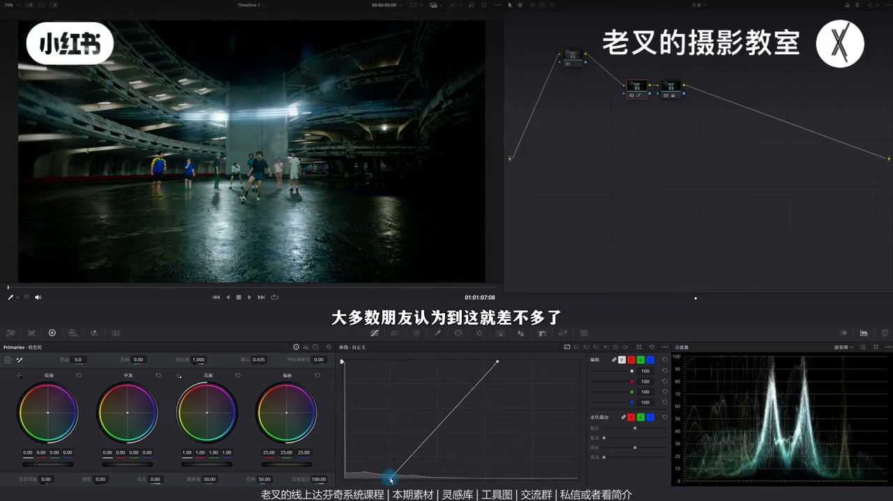
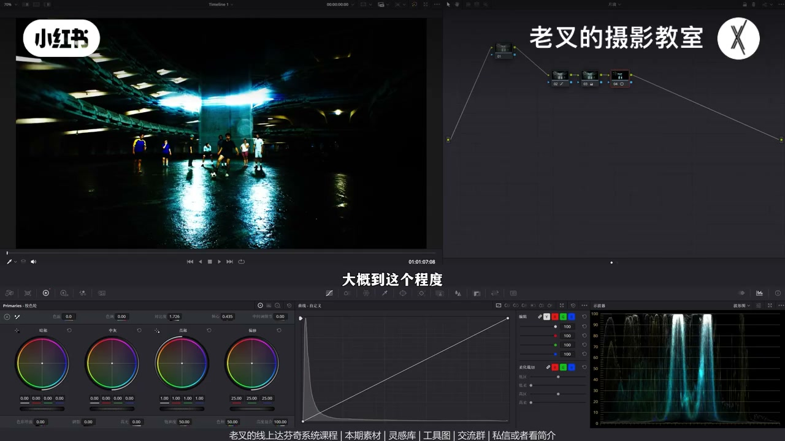
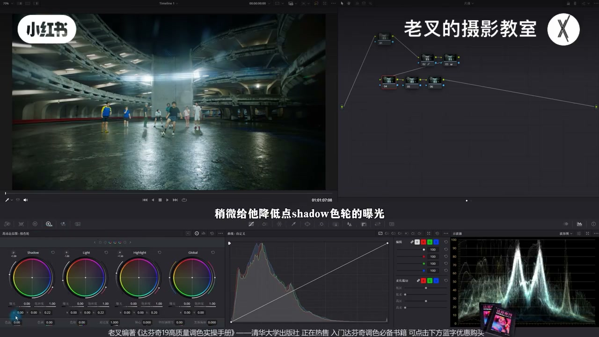
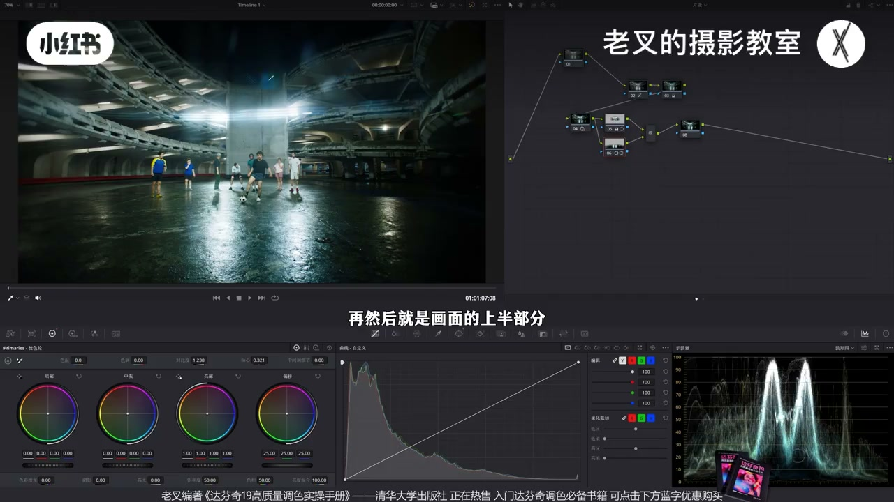
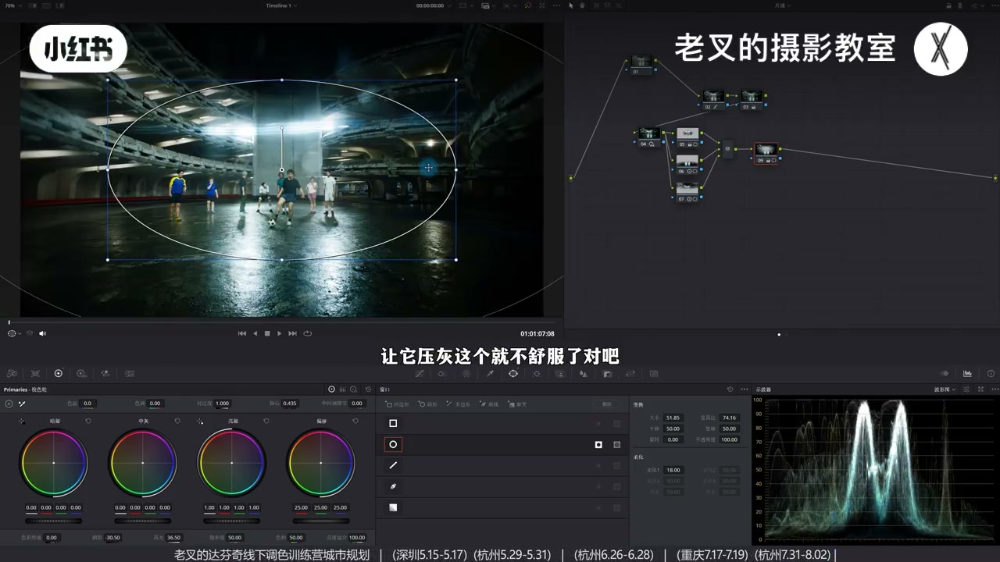
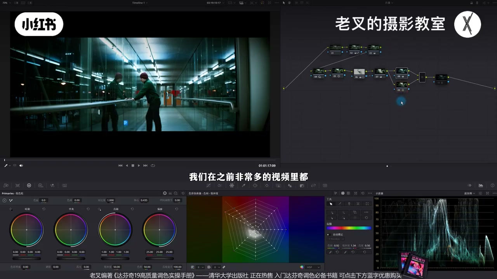

内容要点
夜景最大问题是暗部不够暗：没被光照到的区域理应死黑，却常被「清晰可见」绑架。还原后应用猛加对比开关诊断发灰；能全局加对比就全局，否则用 HDR 拉开反差，再遮罩提人物区、地面与上半部局部加对比——往往比全局对比更有质感。暗角巩固视线（压暗同时护高光），可选高光暖染色并中灰回调。第二案例同思路：HDR→分区→冷调纠肤→蓝青密度求耐看银感。
知识结构
夜景未受光区应死黑；暗部不够暗＝不出彩；还原后继续压暗部。
猛加对比到没法看再开关：以为完美的还原其实发灰。
不宜全局对比时：降 Shadow/Light、抬 Highlight，精准强化区域反差。
人物带光源提高光；地面/上半对比+轴心；与全局对比滑线对照。
小暗角压四周护光感；亮部略暖黄绿+中灰回调。
窄光夜景同思路；冷调后蜘蛛网纠肤；蓝密度+降饱和更耐看。
夜景质感先来自「该黑的够黑」。用对比度诊断发灰，优先可控的 HDR/局部对比，而不是一味保「处处可见」。染色辅助明暗；强冷调要护肤色，并用密度把过抢的蓝压耐看。窄光逻辑光源的夜景大多可复用此流程。
00:00-01:04夜景老问题：暗部不够暗
夜景是老生常谈。素材条件不错：一号降噪挪开，二号抬高光、压暗部，再加饱和——很多人还原到这就停。他继续压暗部（高光略回），多数人觉得「差不多」时其实还能压：夜景最大问题是过于追求清晰可见。
没被光照到的区域理应死黑；夜景不出彩，往往因为暗部不够暗。

01:04-01:41用对比度检查：还原后其实发灰
判断暗部够不够：新节点对比度加到没法看，再开关——原本以为不错的还原其实发灰。从 Log 灰片初步还原时，对变化的感知大于「初次看到还原画面」，容易误以为已完美。对比度检查很好用。

01:41-02:43能全局就全局；否则 HDR 拉开反差
若全局加对比安全可控（高光不太亮、暗部不太死），就全局，别自找麻烦。本片人物区易反差过强、高光易过曝、死黑面积过大——虽暗部应死黑，仍希望留安全空间，故不适合无脑全局对比。
可用 HDR：略降 Shadow 与 Light，抬 Highlight 并微调范围，比单一旋钮更能靠力度差精准强化区域反差。反差略拉开但仍不够，进入局部。

02:43-04:10局部：人物、湿地面、上半部；对比全局更有质感
人物区遮罩可带上上方光源，提亮更有依据：略抬高光滑块。湿滑地面一定要加反差否则发灰——并行节点画罩，对比度+轴向左略亮。上半部同样并行加对比。
抓静帧与「全局加对比」滑线对照，对齐中间墙：中心区局部结果更有质感。全局对比效果一般时，值得做局部，其实也很快。

04:10-05:01暗角巩视线；可选高光暖染色
小暗角让中间亮区不变、四周略压；压暗同时略抬高光滑块，避免环境自带光感被压灰。可选染色：亮部色轮左上略暖黄绿，中灰回调——色轮染色核心是回调，颜色再辅助强化明暗。

05:01-07:14第二案例：窄光夜景同逻辑 + 冷调纠肤
只要逻辑光源是窄光，多数夜景可参考。第二段灰片还原后已不错，同思路可从平变有层次：HDR 全局拉开→略加对比→遮罩带光源与人物提亮→外部压其余，明确明暗，否则发灰发平。
明显冷调：色温走冷后肤色失色，并行蜘蛛网纠肤。蓝往往比「够暗」更抢：六相切片加蓝青密度、略降饱和，冷调保留但蓝更耐看、偏银感。两素材均可领取练手。

完整转录（280段）
以下文本由 Whisper medium 模型自动转录，可能存在少量识别误差，已尽可能修正。
夜景画面一直是个老大胆的问题
也是很多朋友经常会问的一个类型
我们看到这个画面
其实这个画面拍摄的条件非常不错
我们可以给它做下简单的还原
建立几个节点
一号节点是降噪
我们给它挪到一边
然后在二号节点中
把高光给它往上一提
大概到这个程度
然后再把暗部给它往下一降
在后面再加一点饱和度
大概到这个程度
很多时候大家还原到这个程度就停了
不知道该如何进行下去
大家可以看着我在二号节点给暗部的强化
我会逐渐的压暗部
大家如果觉得差不多了
可以在弹幕中喊停
我们给它暗部再往下降
是不是大多数朋友认为到这里就差不多了
对吧
那如果我说我再往下压呢
高光记得给它稍微提点上来
到这个程度是不是也还能理解
再往下到这个程度
你感觉也还好
没有特别夸张
对不对
那这就是夜景画面最大的问题
我们很多时候对夜景画面
都过于追求它所谓的清晰可见
要知道对于夜景画面来讲
没有被光照到的区域
它理应就是死黑的
而夜景画面不出彩
就是因为暗部不够暗
那该怎么去判断我们的暗部压的够不够呢
我们可以利用对比度的方式来辅助判断
我们可以再来个节点
把画面增加对比度
加到你画面没法看为止
大概到这个程度
然后我们把节点做开关
此时你会发现原本还原的结果
你以为不错的结果
其实是发挥的
对不对
原因就是因为你把画面从Log绘编
给它初步还原了之后
你对变化的感知
其实是要大于初次看到还原后的画面的
也就是说
绘编还原到这种程度的变化
会让你误以为画面已经完美了
可实际上还差了不少
所以我们可以利用对比度的方式来检查一下
这是一个很好用的一个方式
此时我们已经发现了画面是发挥的
我们该如何强化呢
如果说你的画面
通过全局增加对比度
就可以安全的控制
比如说你像这个画面
高光也没有特别亮
暗部也没有特别暗
对吧
你如果像这种情况的话
那你就全局增加对比度
不用去单独调整
麻烦
那如果说你像我们这个画面
它容易让人物这个区域
它的反差过强
同时这个高光容易过曝
暗部死黑的面积太大
虽然说我们暗部里应死黑
可是还是希望它能够保留一定的安全空间
但既然是这样的一个结果
我们就不适合全局增加对比度
所以需要局部调整
如果你嫌麻烦的话
是可以先给它小幅增加点对比度
但是我不是很建议
直接用一级较色轮中的对比度来无脑的拉
我们可以考虑用HDF色轮
稍微给它降低点shadow色轮的曝光
同时也降一点Light色轮的曝光
再稍微提高一点Highlight色轮的曝光
让它的高光能够再回来一些
不至于受到我们的影响
让它压暗
可以稍微调整一下Highlight色轮的范围
大概到这个程度
我们这样的操作比起单一调整HDF色轮
我们可以通过调整的力度区别
来更精准的强化区域反差
那这样一做
我们反差就稍微拉开了一些
但是还不够
我们可以给人物区域画一个遮罩
遮罩的范围选择
我会带上上面的光源
这样可以让我们的提亮更有依据
因为你是人物区主体区域
肯定是要把它提亮的
所以我这里选择是提高了一点高光滑块
让它稍微亮一些
然后就是地面
你像这种湿滑的地面
一定要增加反差
否则它就是会发挥的
我们可以按住Alt加P
或者是Option加D
建立一个变形节点
在下面这个新建的节点中
给地面也画一个遮罩
然后利用对比度以及轴心的组合
把轴心向左移动
让它稍微亮一点
好大概到这个程度
我们加完了
照你看原本其实这个地面
是发挥的非常明显的
再然后就是画面的上半部分
同样建立一个变形节点
给上半部分也画一个遮罩
然后也同样给它增加点对比度
好到这种情况就差不多
这样的调整
我们就可以让画面的反差有效的拉开
我们可以给它抓取一个竞争
然后在画廊中双击这个竞争
它就会呈现一个滑线的形式
我们把这个节点都先关闭了
然后跟全局增加对比度来做一下对比
我们可以参考这里的中间这个墙
让它尽可能的一致
好到这个程度差不多
我们可以看一下
这两个画面的调整
是不是有非常大的区别
这个是我们局部调整的结果
这个是全局增加对比度的结果
因为发现不管是哪个区域
比如说画面的中心区域
局部调整出来的结果
它就比你全局增加对比度更有质感
对不对
所以我是会推荐
如果你全局增加对比度效果一般的话
还是要考虑我们给它做一下局部调整
其实也是非常的快
再然后我们也可以画一个小暗角
再一次的巩固一下视觉中心
小暗角
我主要让中间亮的部分保持不变
区域部分稍微给它压暗一些
还是那句话
要压暗就不能止
压暗你还得提亮
所以我这里降低了阴影滑块之后
我还稍微给它提高了点高光滑块
不能让这些环境中自带光感的物体
让它压灰
这个就不舒服了
对吧
好大概是这样的一个结果
我们看到画面的变化是非常明显的
最后如果你想染色的话
可以考虑给高光加一点点暖
我这里用的是色轮染色
也就是让亮部色轮稍微往左上角走一点
我觉得可能让它带点黄绿色挺好看的
好大概到这个程度
然后中灰色轮要回调
色轮染色的核心原理就是来做回调
好大概是这个意思
我们看到这个染出来
结果其实还是不错的
对吧
也能够再次通过颜色
来把它的明暗关系给它辅助强化
还不错的
其实你说这种夜景的调色思路
并不是多么的个性化
大多数夜景
只要你的逻辑光源是窄光
都可以参考
比如说这个画面
这个是它灰片的一个状态
我们同样给它做下还原
还原之后其实就已经不错了
对吧
但是我们可以通过非常简单的思路
把它从这样变成这样
你看这个效果非常明显
对不对
这两个素材
我都传到了现场分享平台
大家可以私信
或者看我姐姐来加入
免费自取
还有达芬吉的线上系统课程
和线下调色训练营
这个节点我就不重做了
我给大家简单的开关起来
过一下思路就行
首先4号节点
我们是利用HDX色轮
先给它全局拉开
这个跟刚刚是一样的思路
参数都没怎么变化
然后我在5号节点
稍微增加了一点对比度
因为我觉得原本那个反差
加的还不是特别特别够
再然后我在6号节点
给这个区域画了一个支照
既带上了这里的逻辑光源
也带上了人物
让它稍微提亮一些
然后再来个外部节点
把漆部分稍微压暗一点
这样都是为了保证
我们的画面中的明暗关系
是明确的
如果不做这两个节点
你的画面就是发灰发平了
没有层次
再然后就是染色
我想让它带上一点冷调
不是带上一点
是带上比较明显的冷调
所以我在8号节点
用色温给它全局往冷的方向去走
可是你加了冷之后
你会发现皮肤变得没颜色了
它原本其实有颜色的
皮肤也受到太多的影响了
对不对
所以我在并行节点的9号节点中
用蜘蛛网把肤色给它纠正回来
这个思路我们在之前
非常多的视频里都讲过
这样就能够保证
我们染色不会影响到肤色
再然后其实对于很多画面
蓝色我们会忽略它的一个比重
你要做足够强的蓝色
必然的是要配合足够的暗
可是我们这个画面
蓝色强的
其实比暗的要更重一些
所以我们要考虑
把蓝色给它稍微微调一下
也就是我在后面又新建了一个节点
用色流镭射相切片工具
把蓝色和青色的密度增加
再给它减少一点饱和度
我们看画面变化
这是调整前
这是调整后
你会发现
画面中没有丢失整体偏冷的这个结果
但是它蓝色变得更耐看了
更往银色方向去靠了
那这种感觉我觉得会更舒服
所以我们就利用了
这个非常简单的一个思路
把画面从这样变成了这样
效果其实还是不错的对吧
大家可以把素材领取过去之后练练手
讲到这里
如果你觉得你有帮助的话
还希望多多赞联
好了
这期就到这里
886